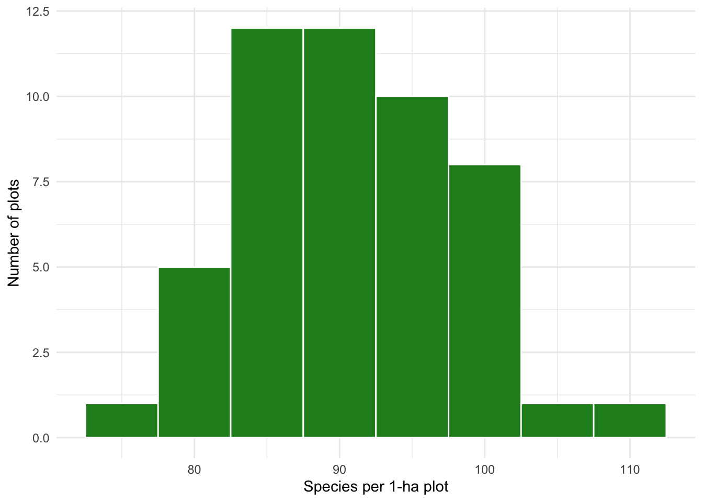
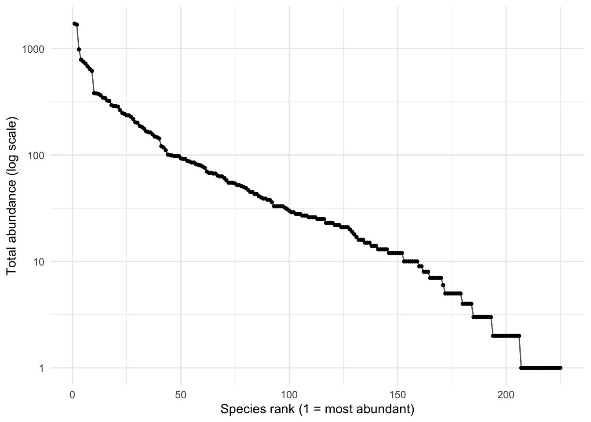
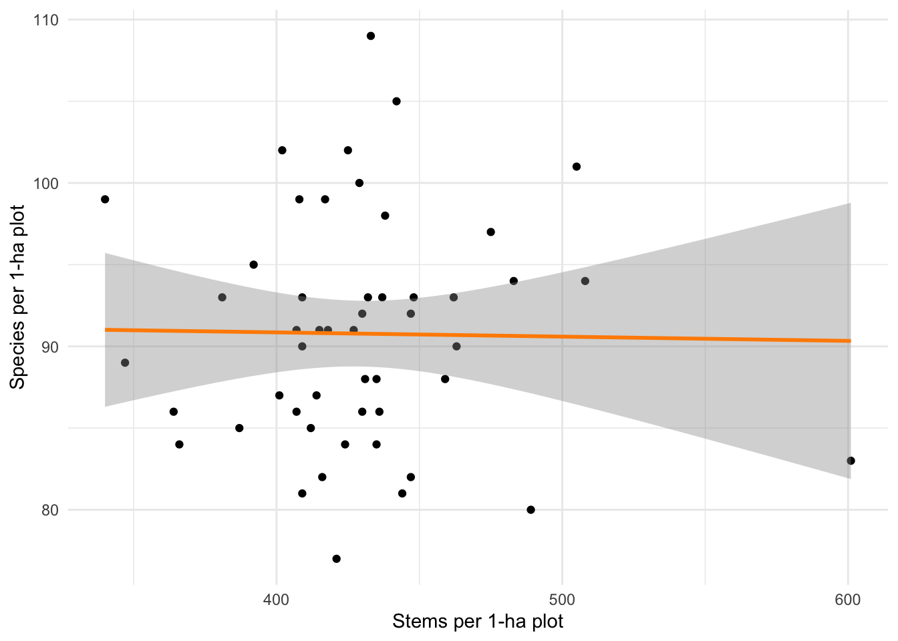
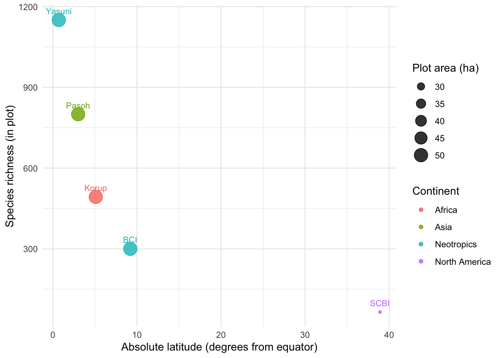

## Run this ONCE, then comment it out.
install.packages("vegan")14 ForestGEO Community Ecology: Why are there so many tree species, and where?
If you haven’t met these before: this chapter uses ideas about counting and comparing populations from the population-growth chapters (a count of stems is just population size), and the log-transformation logic from the metabolic ecology chapter (Chapter 16). You can do this chapter without having finished those, but a glance back will help.
14.1 Goals
- Evaluate the consistency of the latitudinal gradient of species diversity.
- Define species richness, evenness, and diversity, and explain why these are three different things.
- Use a real forest-census data set to measure diversity, and to see why the number you get depends on how hard you looked.
- Develop and evaluate a prediction about how forest diversity changes from the poles to the equator, and confront a real exception to that pattern.
- Practice reading the shape of an ecological relationship (rank–abundance and species–accumulation curves) before trusting a single summary number.
Time: ~2–3 h. Most students start the activity in one 80-minute class period and finish the deliverables at home.
14.2 Preparatory Steps
- Find out what you need for the deliverables (Section 15.9) before you start, including the parts you will sketch by hand and turn in.
- Watch the video lectures on biodiversity and the latitudinal diversity gradient.
- Skim (davies2021?) for one paragraph on what the ForestGEO network is. You do not need the details—just the idea that many forests around the world have been censused the same way.
- Install the
veganpackage once (instructions below). Everything else uses packages you already have.
14.3 Background
Walk into a forest in Ohio and you might learn most of the trees in an afternoon: a few oaks, some maples, hickory, beech, ash. Walk into a lowland forest in Panama or Malaysia and you could spend a career and not finish. Why the enormous difference? And how would you even measure it fairly, when one forest hands you twenty species and another hands you eight hundred?
To compare forests honestly, ecologists needed forests measured the same way. That is exactly what the Forest Global Earth Observatory (ForestGEO) provides. Beginning with a single 50-hectare plot on Barro Colorado Island (BCI) in Panama in 1980, the network has grown to dozens of large forest dynamics plots spread across the world’s major forests (davies2021?). In every plot, field crews follow the same protocol: every free-standing woody stem at least 1 cm in diameter is mapped, tagged, identified to species, and then re-measured every five years or so (anderson-teixeira2015?). A single 50-ha plot can hold a few hundred thousand individual trees. Because the protocol is identical across continents, a difference in the numbers reflects a difference in the forests, not a difference in the method.
14.3.1 Three things people mean by “diversity”
“Diversity” is used loosely in conversation, but it bundles together at least three distinct ideas, and confusing them is one of the most common mistakes in ecology.
- Richness is simply the number of species present. It ignores how common each one is. A forest with 100 species, 99 of them represented by a single tree, has the same richness as a forest with 100 evenly abundant species.
- Evenness describes how equally the individuals are spread among the species. The two forests just described have very different evenness.
- Diversity indices (Shannon, Simpson, and others) combine richness and evenness into one number, so that a community is “more diverse” both when it has more species and when those species are more evenly abundant.
TipFollow the Logic: why richness alone can fool you
Imagine two 1-hectare plots. Plot A has 10 species, each with 100 trees. Plot B has 10 species, but one species has 991 trees and the other nine have one tree each. Both have richness = 10. Yet if you walked through Plot B blindfolded and grabbed trees at random, you would almost always grab the same species—it behaves like a one-species forest. Richness counts the rare species as fully as the common ones; evenness and diversity indices do not. Before you compute a diversity index, ask yourself which of these three quantities your question is really about.
14.3.2 Richness depends on how hard you looked
Here is the uncomfortable part. Richness is not a fixed property you can read off a forest like its temperature. The more individuals you count, the more species you find, because rare species only show up once you have sampled enough trees to stumble onto them. Census 1 hectare at BCI and you find about 168 tree species; census all 50 hectares and you find roughly 300 (condit1996?). The forest did not change—your sample got bigger.
This is the species–accumulation (or species–area) relationship, and it means two numbers are only comparable if they come from the same amount of effort. Comparing “168 species” from a 1-ha plot to “493 species” from a 50-ha plot tells you almost nothing, because the second number had fifty times the chance to find rarities. Ecologists handle this with rarefaction: ask how many species you would expect if every sample were thinned to the same number of individuals (gotelli2001?). You will do this below.
14.3.3 The latitudinal diversity gradient—and an exception
Across most groups of organisms, diversity rises as you move from the poles toward the equator (hillebrand2004?). Tropical forests are the headline example. But the tropics are not uniform. Compared per hectare, lowland forests in the Neotropics and Southeast Asia are staggeringly rich, while African rainforests are consistently less rich—a pattern old enough that ecologists once called Africa “the odd man out” (kenfack2007?). The 50-ha plot at Korup in Cameroon holds about 493 tree species among more than 329,000 individuals—extraordinary by temperate standards, yet well below comparable Asian and Neotropical plots censused the same way (kenfack2007?). A good theory of diversity has to explain both the broad gradient and its exceptions.
14.4 Hypotheses and Predictions
We will pursue two questions, each with its own logic.
Question 1 (within one forest): How is diversity structured at BCI—are species roughly equal in abundance, or are a few common and most rare?
This is an inductive question: we will let a large, carefully collected data set reveal a pattern, rather than deducing the pattern from a model first.
Question 2 (across forests): How does tree richness change with latitude across the ForestGEO network?
This one is deductive: the latitudinal-gradient hypothesis makes a clear, testable prediction before we look at the data—richness should decline as we move away from the equator. When we meet the African exception, we will switch to abductive reasoning: given a surprising observation, what is the best explanation?
ImportantPredict before you compute
Before you run a single line of code, sketch three graphs by hand on paper and photograph them for your deliverables:
- Rank–abundance. Put species rank (most abundant = 1) on the x-axis and abundance on the y-axis. Draw the shape you expect for a tropical forest.
- Species accumulation. Put number of hectares sampled on the x-axis and cumulative species found on the y-axis. Draw the shape you expect, and mark whether you think it ever flattens out.
- Richness vs. latitude. Put absolute latitude on the x-axis and species richness on the y-axis. Draw the line the latitudinal-gradient hypothesis predicts.
Keep these. The point of the chapter is to compare your hand-drawn predictions to what the data actually do—and to be able to explain any mismatch.
14.5 Get R ready for work
We use the vegan package, the standard toolkit for community ecology in R, together with the tidyverse and broom. vegan ships with the BCI data set: counts of tree species in fifty 1-hectare plots from the Barro Colorado Island census—real data, already in R, so nothing can break or go offline.
library(vegan) # community ecology: diversity, rarefaction, accumulation
library(tidyverse) # data wrangling and ggplot2
library(broom) # tidy model output
data(BCI) # load the Barro Colorado Island plot-by-species tabledim(BCI) # rows = 1-ha plots, columns = species[1] 50 225BCI[1:5, 1:6] # a corner of the table: counts of trees, by species, by plot Abarema.macradenia Vachellia.melanoceras Acalypha.diversifolia
1 0 0 0
2 0 0 0
3 0 0 0
4 0 0 0
5 0 0 0
Acalypha.macrostachya Adelia.triloba Aegiphila.panamensis
1 0 0 0
2 0 0 0
3 0 0 0
4 0 3 0
5 0 1 1
NoteWalk me through this data table
Each row is one 1-hectare plot (there are 50). Each column is one tree species (there are 225 in this curated subset). Each cell is the number of individual trees of that species counted in that plot. A community data table in this “sites-by-species” layout is the workhorse of community ecology—almost everything below is just a clever summary of these counts. If you understand that one cell is “how many trees of species j I found in plot i,” you understand the whole table.
14.6 Measuring diversity at BCI
14.6.1 Richness, plot by plot
specnumber() counts the species present (abundance > 0) in each plot.
richness <- specnumber(BCI) # one richness value per 1-ha plot
summary(richness) # how many species per hectare? Min. 1st Qu. Median Mean 3rd Qu. Max.
77.00 86.00 91.00 90.78 94.00 109.00 tibble(richness = richness) |>
ggplot(aes(x = richness)) +
geom_histogram(binwidth = 5, fill = "forestgreen", colour = "white") +
labs(x = "Species per 1-ha plot", y = "Number of plots") +
theme_minimal()
Notice that even within a single 50-ha forest, 1-ha richness varies from plot to plot. Diversity is patchy at small scales.
14.6.2 Evenness and the rank–abundance curve
To see evenness, pool all 50 plots, sort species from most to least abundant, and plot abundance against rank. This is a Whittaker (rank–abundance) plot.
pooled <- colSums(BCI) # total trees of each species, all plots
rank_ab <- tibble(species = names(pooled), abundance = pooled) |>
filter(abundance > 0) |>
arrange(desc(abundance)) |>
mutate(rank = row_number())
ggplot(rank_ab, aes(x = rank, y = abundance)) +
geom_line(colour = "grey40") +
geom_point(size = 1) +
scale_y_log10() +
labs(x = "Species rank (1 = most abundant)",
y = "Total abundance (log scale)") +
theme_minimal()
TipFollow the Logic: why a log scale, and why the long tail matters
On a log y-axis, a straight-ish declining line means abundance falls by a roughly constant factor with each step down the ranking—the 10th species is some fixed fraction of the 1st, the 100th a fixed fraction of the 10th. The long, flat tail on the right is the army of rare species, each with only a handful of individuals. That tail is the reason richness keeps climbing as you sample more, and the reason a single common-species walk through the forest gives a badly biased impression of diversity. Compare this real curve to the one you drew by hand.
14.6.3 One number: Shannon and Simpson diversity
shannon <- diversity(BCI, index = "shannon") # accounts for richness + evenness
simpson <- diversity(BCI, index = "simpson") # prob. two random trees differ
tibble(shannon = shannon, simpson = simpson) |>
summarise(across(everything(), list(mean = mean, sd = sd)))# A tibble: 1 × 4
shannon_mean shannon_sd simpson_mean simpson_sd
<dbl> <dbl> <dbl> <dbl>
1 3.82 0.234 0.959 0.0257## The "effective number of species": how many EQUALLY-common species
## would give the same Shannon diversity?
effective_species <- exp(shannon)
summary(effective_species) Min. 1st Qu. Median Mean 3rd Qu. Max.
14.04 42.27 46.99 46.66 52.94 58.99
TipFollow the Logic: what
exp(H) means
Shannon’s H is in awkward units (it’s an entropy). Exponentiating it converts H into an effective number of species: the number of equally abundant species that would produce the diversity you observed. If a plot has 90 real species but exp(H) is only 35, that is the data telling you “this forest behaves like 35 evenly common species, because the other ~55 are rare.” That single translation—from an abstract index back into ‘number of species’—is why effective numbers are now preferred over raw indices.
14.6.4 Rarefaction: comparing fairly
Plots differ in how many trees they contain, so a plot with more stems gets more chances to accumulate species. Rarefaction asks: at a common number of individuals, how many species would we expect?
stems <- rowSums(BCI) # total trees per plot
min_stems <- min(stems) # thin every plot to this many
rarefied <- rarefy(BCI, sample = min_stems)
tibble(observed = richness, rarefied = rarefied) |>
summarise(mean_observed = mean(observed),
mean_rarefied = mean(rarefied))# A tibble: 1 × 2
mean_observed mean_rarefied
<dbl> <dbl>
1 90.8 83.0Why does the rarefied richness come out lower than the observed richness? Make sure you can answer that in your own words before moving on—it is the whole reason rarefaction exists.
14.6.5 Does richness just track the number of stems?
If richer plots are simply the ones with more trees, that is worth knowing. We can fit a quick linear model and read it with broom.
model_df <- tibble(richness = richness, stems = rowSums(BCI))
fit <- lm(richness ~ stems, data = model_df)
tidy(fit) # slope, intercept, and their uncertainty# A tibble: 2 × 5
term estimate std.error statistic p.value
<chr> <dbl> <dbl> <dbl> <dbl>
1 (Intercept) 91.9 10.2 8.97 7.85e-12
2 stems -0.00260 0.0238 -0.109 9.13e- 1glance(fit) # r.squared: how much of richness variation stems explain# A tibble: 1 × 12
r.squared adj.r.squared sigma statistic p.value df logLik AIC BIC
<dbl> <dbl> <dbl> <dbl> <dbl> <dbl> <dbl> <dbl> <dbl>
1 0.000249 -0.0206 7.08 0.0120 0.913 1 -168. 342. 347.
# ℹ 3 more variables: deviance <dbl>, df.residual <int>, nobs <int>ggplot(model_df, aes(x = stems, y = richness)) +
geom_point() +
geom_smooth(method = "lm", se = TRUE, colour = "darkorange") +
labs(x = "Stems per 1-ha plot", y = "Species per 1-ha plot") +
theme_minimal()
NoteWalk me through
tidy() and glance()
lm() fits the line. Instead of reading the dense default summary(), broom gives us two tidy tables. tidy(fit) returns one row per coefficient—the slope tells you how many extra species you get per additional stem, and its p.value tells you whether that slope is distinguishable from zero. glance(fit) returns one row for the whole model; the key column is r.squared, the fraction of plot-to-plot richness variation explained by stem number. If r.squared is low, then richness is not just a stem-count artifact—something ecological is going on.
14.7 Comparing forests across the globe
Now the cross-continental question. Below is a small table of ForestGEO (and sister) plots, with the species richness reported for each and the plot area it came from. The numbers are drawn from the published site descriptions and papers cited at the end of the chapter.
sites <- tribble(
~site, ~country, ~continent, ~abs_latitude, ~area_ha, ~species,
"SCBI", "USA", "North America", 38.9, 25.6, 65,
"BCI", "Panama", "Neotropics", 9.2, 50.0, 300,
"Korup", "Cameroon", "Africa", 5.1, 50.0, 493,
"Pasoh", "Malaysia", "Asia", 3.0, 50.0, 800,
"Yasuni", "Ecuador", "Neotropics", 0.7, 50.0, 1150
)
sites# A tibble: 5 × 6
site country continent abs_latitude area_ha species
<chr> <chr> <chr> <dbl> <dbl> <dbl>
1 SCBI USA North America 38.9 25.6 65
2 BCI Panama Neotropics 9.2 50 300
3 Korup Cameroon Africa 5.1 50 493
4 Pasoh Malaysia Asia 3 50 800
5 Yasuni Ecuador Neotropics 0.7 50 1150
ImportantA trap built into this table
These richness numbers come from different plot areas (25.6 ha vs. 50 ha). You just spent half a chapter learning that richness depends on sampling effort. So before you compare these numbers, ask: is it fair to compare a 25.6-ha count to a 50-ha count? For the cleanest comparison, ecologists use 1-hectare richness, where the published values are roughly: BCI 168, Pasoh 497, Yasuni 670 species per hectare (condit1996?). Carry that caveat into every conclusion you draw below.
ggplot(sites, aes(x = abs_latitude, y = species,
colour = continent, size = area_ha)) +
geom_point(alpha = 0.8) +
geom_text(aes(label = site), vjust = -1, size = 3, show.legend = FALSE) +
labs(x = "Absolute latitude (degrees from equator)",
y = "Species richness (in plot)",
colour = "Continent", size = "Plot area (ha)") +
theme_minimal() # + scale_y_log10()
Two things should jump out. First, the broad latitudinal gradient: the temperate plot (SCBI, Virginia) has a tiny fraction of the richness of the tropical plots—exactly what the hypothesis predicted, and, ideally, what you drew by hand. Second, the exception: among the tropical plots, the African site (Korup) is clearly less rich than the Asian and Neotropical sites, even after accounting for area. The gradient is real, but it is not the whole story.
TipFollow the Logic: from deduction to abduction
The latitudinal-gradient hypothesis deduced a prediction (richness falls with latitude) and the data largely confirmed it. But Korup is a surprise the hypothesis did not predict. Now you reason abductively: what is the best explanation for a depauperate African tropics? Candidate explanations in the literature include a drier, more variable climate history (Pleistocene contractions of African rainforest), a smaller total area of lowland tropical forest on the continent, and higher past extinction. You do not have to settle this—you have to recognize that a good observation generates the next hypothesis, and to be able to say what data would help you choose among these explanations.
14.8 Deliverables
Assemble the following into a single document and submit it online.
Your three hand-drawn predictions (rank–abundance, species accumulation, richness vs. latitude), photographed, before you ran any code.
In your own words (2–3 sentences each): a. the difference between richness, evenness, and diversity; b. why rarefied richness came out lower than observed richness; c. what
exp(H)(effective number of species) tells you that raw Shannon H does not.Reproduce and include the rank–abundance plot (Figure 14.2) and the global latitude plot (Figure 14.4). For each, write one sentence comparing the real figure to your hand-drawn prediction. Where they differ, explain why—this is the point of the assignment.
Build a species–accumulation curve for BCI and include it. Starter code:
accum <- specaccum(BCI) # cumulative species as plots are added accum_df <- tibble(plots = accum$sites, richness = accum$richness, sd = accum$sd) ggplot(accum_df, aes(x = plots, y = richness)) + geom_ribbon(aes(ymin = richness - sd, ymax = richness + sd), fill = "grey80") + geom_line(linewidth = 1) + labs(x = "Number of 1-ha plots sampled", y = "Cumulative species found") + theme_minimal()
In one or two sentences, answer: does the curve flatten out by 50 hectares? What does your answer imply about how many tree species the whole forest contains versus how many appear in any one plot?
The African exception. In a short paragraph, propose the explanation you find most convincing for why Korup is less rich than comparable Asian and Neotropical plots, and state one kind of data that would help test your explanation.
Audit the machine. Below is a paragraph generated by an AI chatbot when asked to summarize this chapter. It sounds authoritative and is mostly right, but it contains at least one substantive ecological error. Find the error(s), quote the offending sentence, and correct it using what you learned:
“Species richness is the most complete measure of biodiversity because it accounts for both how many species are present and how evenly abundant they are. Because the ForestGEO plots all use the same protocol, a forest’s richness is a fixed property, so the 493 species recorded at Korup can be compared directly to the 168 species recorded in a one-hectare plot at BCI. Diversity always increases smoothly toward the equator, with no exceptions.”
This is exactly the skill this whole book is built around: a machine can produce a fluent paragraph in seconds, and only someone who understands the mechanisms can catch where it is subtly—or badly—wrong.
14.9 References
This chapter cites (davies2021?), (anderson-teixeira2015?), (condit1996?), (kenfack2007?), (hillebrand2004?), (gotelli2001?), and the vegan package (oksanen2026vce?). Full references appear in the book’s reference list once these keys are in your .bib.